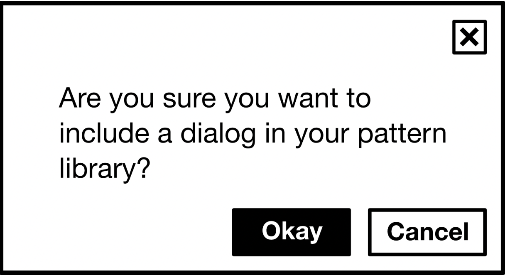
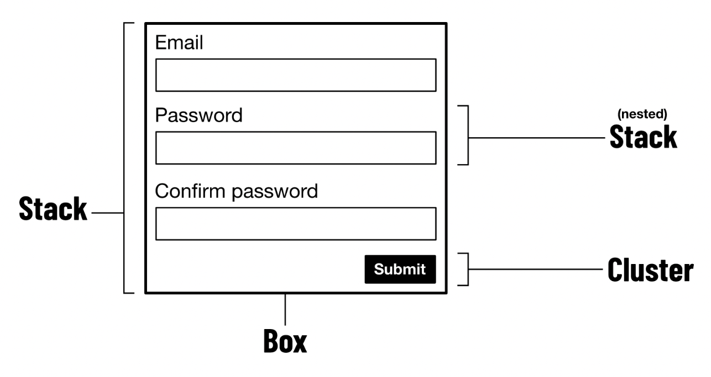

UX Prototyping
hifi
2/15/23
Week SIX
But first … A short story
The setting
- Story takes place in the eighties
- Toyota was eating everyone’s lunch
- Ford had a plan
- Let’s visit Toyota!
Toyota embraced the visit
- Ford executives saw everything
- Aside: Ford executive offended by insolent elevator operator
- End of tour: Any questions?
- Yeah, show us the secrets!
- Toyota: we showed you everything
- Ford execs couldn’t accept that
Moral of the story
People sometimes don’t see what’s right in front of them
Why am I telling you this?
I have a skeptical student
One of my favorite sayings:
Two people look and one person sees. That person will win.
Another example: Godfather, Part II (1974)
- Two crime bosses see a revolutionary being killed in Havana
- One of the crime bosses says that the army is being paid and the revolutionary is not
- He deduces that the revolutionaries might win and pulls his business out of Havana just before Castro takes over
Another exmple: Spymaster Yuri Titrov
- During the cold war, he caused the deaths and derailments of many American spies
- He ferreted them out by watching embassy workers
- Sitting alone in parks much?
- Visiting cafés during working hours?
- Not using official cars?
- Using pay telephone booths?
- But the Americans thought he had a mole and we axed many of our own people
Again
Two people look and one sees
hifi prototyping
Elements
- Color
- Typography
- Layout
- Animation
Color
〈pause for color video〉
Problem: App in video ceased to exist!
- Taken off App store
- Replaced with a paid website
- Seems to invalidate much of the reason for making it an iPad-only app
- I’ve written to the developers with no response
Color is an enormous concept, recently explored in the CHI community by Shugrina et al. (2019). It can be the subject of entire semester-long courses in several disciplines, including psychology, neurology, biology, and optical science.
I would like to limit my further discussion to two issues among the very many that should be of interest to you as designers. The first is education about color and the second is color words.
Education about color
Josef Albers was without peer in educating art students about color in the twentieth century. His kit, often referred to as a book, is called Interaction of Color. Its most important sentence is perhaps “Color is the most relative medium.”
Color word research
Following are quotations from color word research contributed by a previous student.

The website mentioned on the previous slide continued as follows:
A prominent doctrine in linguistics and anthropology holds that each language and culture expresses a unique world view by its particular way of slicing up reality into named categories. (See Sapir-Whorf hypothesis).
Not everyone agrees

Color names in computing
arstechnica on color name history ran a sad and funny article in Fall 2015 on the names of colors as used in computing, from the X Window System project in the eighties through contemporary CSS3.
Typography
- You’re experiencing it right now!
- I’m using default typefaces!
- People have prejudices, e.g., Comic Sans, Papyrus
- It’s not just fonts!
- LaTeX and Adobe InDesign do the best spacing and line breaking
How do people experience typography?
- Books
- Magazines
- Browser
- Apps
- All different! Yet much of typography is the same—defaults!
Where does type come from?
- Typographers and their traditions
- Designers with little typography education
- Software developers with no typography education
- Reading psychologists who do research
Who can you rely on for advice?
- Robert Bringhurst, Bringhurst (2004)

Changes in type over time
Typography began in earnest in the 1450s. (There had been typesetting in China 200 years before this but the art invented there was never communicated outside a small community and was not widely known until archeologists in the 20th century rediscovered the long-lost artifacts.)
Emulating handwriting
The first famous type founders
Materials
Bodoni stressed out the machine

La Vita Nuova
Challenges for type
Traditional typography for a given page of a book represents three widely recognized challenges, legibility (ability to distinguish each letterform), readability (of the entire page), and color (technical term used to mean ink density).
Reading psychology
This a sub-discipline of cognitive psychology that is the source for many studies of reading comprehension and comparisons of various contributors to reading comprehension, including typography.
Type in a menu
In the film AI (2001), the character portrayed by Jude Law is invited to choose from a context sensitive menu by the holographic cartoon Dr. Know, as voiced by Robin Williams. When the Jude Law character asks about a concept, Dr. Know asks for the context in which he asks, since the concept has different meanings in different contexts.

art nouveau connotes fairy tales

basic writing connotes primal

small caps connotes officialdom

blackletter script connotes religion

Chunking words, especially in menus
Hick’s law predicts the time it will take for a user to make a choice, given the number of choices. Hick’s law can be expressed similarly to Fitts’s Law as
\[t = b \log_2 (n + 1)\]
Here, \(t\) is reaction time, \(b\) is a constant to be found empirically, and \(n\) is the number of choices with which the user is confronted. The extra \(1\) represents the concept none of the above.
The magic number seven ± 2
An important publication, Miller (1956), influenced thinking about appropriate chunk size forever after.
First, the span of absolute judgment and the span of immediate memory impose severe limitations on the amount of information that we are able to receive, process, and remember. By organizing the stimulus input simultaneously into several dimensions and successively into a sequence of chunks, we manage to break (or at least stretch) this informational bottleneck.


Layout
Past advice
- Layout on a twelve column grid
- Easy to reduce to 9,6 or 8,4 for responsiveness
- But Pickering and Bell (2022) advises against this
- They claim it’s too rigid
- Instead, they urge you to learn a dozen reusable components and endlessly combine them
CSS
Let’s look at Pickering and Bell (2022) for layout advice, all web-based
Everything in web design is a box
The box model
Chrome paragraphs
Chrome unordered lists
Display property
Block elements \(\sim\) paragraph (takes all space)
Inline elements \(\sim\) word (takes only content space)
Logical properties
Eschew terms like “left” and “right” instead using start and end, e.g.,
Formatting contexts
display: flex or display: grid causes a <div> to continue to behave like a block, but changes its child elements’ behavior. Now the flow direction changes from vertical to horizontal, as the child elements distribute themselves horizontally. Composite layouts consist of nested formatting contexts.
Content in boxes
The web is responsive by default! Content makes inline elements grow horizontally and block elements grow vertically. Static representations are misleading!
Box sizing
makes calculating and anticipating box dimensions easier.
Exception
Lesson:
“Dimensions of elements should be largely derived from their inner content and outer context. When we try to prescribe dimensions, things tend to go amiss. All we should be doing as visual designers is making suggestions as to how the layout should take shape. We might, for instance, apply a min-height or proffer a flex-basis.
The CSS of suggestion is at the heart of algorithmic layout design. Instead of telling browsers what to do, we allow browsers to make their own calculations, and draw their own conclusions, to best suit the user, their screen, and device. Nobody should experience obscured content under any circumstances.”
Composition over inheritance
Combining simple independent parts gives you more flexibility and leads to more efficiency than connecting everything through interitance to a shared origin.
Illustration: how to make this?
The wrong way: inherited properties
The right way: layout primitives

Why?
Because with the .dialog classes, you’ll have a lot of repeated code—CSS bloat.
But with the same layout primitives, you can build other structures.
Registration form
Slide Layout

Layouts: intrinsically responsive
- The stack
- The box
- The center
- The cluster
- The sidebar
- The switcher
- The cover
- The grid
- The frame
- The reel
- The imposter
- The icon
Example: The stack
Problem
Solution
Animation

Twelve Principles of Animation
- Squash and stretch
- Anticipation
- Staging
- Straight ahead action and pose to pose
- Follow through and overlapping action
- Slow in and slow out
- Arc
- Secondary action
- Timing
- Exaggeration
- Solid drawing
- Appeal
〈pause for illusion of life video〉
Things you can animate
- Position
- Scale
- Rotate
- Origin
- Opacity
It’s all done with curves!

References
END
Colophon
This slideshow was produced using quarto
Fonts are League Gothic and Lato (and STIX for the tiny amount of math)